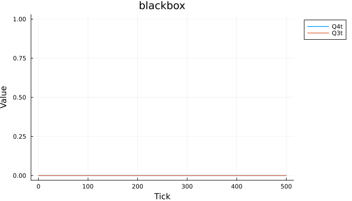
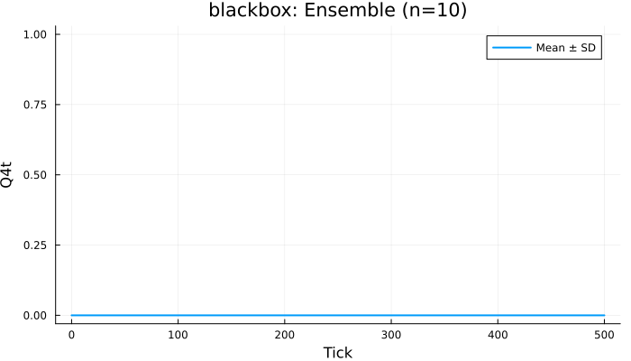

BlackBox
Overview
This vignette demonstrates the BlackBox model implemented in ArkModelZoo.jl using the Ark.jl ECS framework.
Parameters
| Parameter | Type | Default | Description |
|---|---|---|---|
grid_size | Int | 20 | 0..19 = 20x20 |
max_ticks | Int | 500 | max ticks |
Source Code
The Julia code to run this model:
using ArkModelZoo
_, trajectory = run_blackbox()Time Series

Ensemble Runs
Ten replicates with different random seeds, showing mean ± standard deviation.

Appendix: Source Code
This model is implemented in the Ark.jl Entity-Component-System (ECS) framework. The code is split into five files, each with a distinct role:
- Parameters: a mutable struct holding all configurable values.
- Components: lightweight data types attached to individual entities (agents).
- Resources: world-level shared state accessible to all systems.
- Systems: functions that operate on entities each tick, defining model behavior.
- Model: wiring that assembles the world, registers resources and systems, and provides the run entry point.
Parameters (parameters.jl)
The parameter struct uses @kwdef so that every field has a default value and can be overridden by keyword. These defaults match the original NetLogo model’s slider settings.
Base.@kwdef mutable struct BBoxParams
grid_size::Int = 20 # 0..19 = 20x20
max_ticks::Int = 500
seed::Int = 42
endComponents (components.jl)
Components are lightweight data types attached to individual entities (agents). Mutable structs hold per-entity state, while empty tag structs act as markers for the ECS query system to efficiently filter entities.
struct BBoxDummy endResources (resources.jl)
Resources are world-level singletons shared across all systems, used for global state and aggregate statistics.
mutable struct BBoxGrid
width::Int
height::Int
pcolor::Matrix{Float64} # patch colors (10 possible values)
color_list::Vector{Float64}
quad4_matrix::Matrix{Float64}
quad3_matrix::Matrix{Float64}
quad2_matrix::Matrix{Float64}
nquad2_matrix::Matrix{Float64}
q1self::Vector{Float64}
q1neighbor::Float64
end
function BBoxGrid(w::Int, h::Int)
color_list = [0.0, 4.0, 105.0, 125.0, 85.0, 55.0, 15.0, 25.0, 137.0, 139.9]
quad4 = [
1.0 0 0 0 0 0 0 0 0 0;
.4 0 .1 .05 .1 .05 .1 .05 .1 .05;
.55 0 0 0 .15 0 .15 0 .15 0;
.4 .05 .1 0 .1 .05 .1 .05 .1 .05;
.55 0 .15 0 0 0 .15 0 .15 0;
.5 0 0 0 0 .5 0 0 0 0;
.55 0 .15 0 .15 0 0 0 .15 0;
.4 .05 .1 .05 .1 .05 .1 0 .1 .05;
.55 0 .15 0 .15 0 .15 0 0 0;
.4 .05 .1 .05 .1 .05 .1 .05 .1 0
]
quad3 = [
1.0 0 0 0 0 0 0 0 0 0;
.71 0 .07 .05 .04 .03 .05 .02 .01 .02;
.58 0 0 0 .25 0 .06 0 .11 0;
.55 .03 .06 0 .03 .01 .07 .01 .05 .19;
.6 0 .07 0 0 0 .25 0 .08 0;
.5 0 0 0 0 .5 0 0 0 0;
.77 0 .09 0 .09 0 0 0 .05 0;
.52 .05 .09 .01 .07 .03 .01 0 .09 .13;
.55 0 .16 0 .19 0 .1 0 0 0;
.56 .12 .02 .02 .07 .01 .09 .03 .08 0
]
quad2 = [
1.0 0 0 0 0 0 0 0 0 0;
.4 0 .1 .05 .1 .05 .1 .05 .1 .05;
.55 0 0 0 .15 0 .15 0 .15 0;
.4 .05 .1 0 .1 .05 .1 .05 .1 .05;
.55 0 .15 0 0 0 .15 0 .15 0;
.5 0 0 0 0 .5 0 0 0 0;
.55 0 .15 0 .15 0 0 0 .15 0;
.4 .05 .1 .05 .1 .05 .1 0 .1 .05;
.55 0 .15 0 .15 0 .15 0 0 0;
.4 .05 .1 .05 .1 .05 .1 .05 .1 0
]
nquad2 = [
1.0 0 0 0 0 0 0 0 0 0;
0 0 .17 .08 .17 .08 .17 .08 .17 .08;
0 0 0 0 .33 0 .33 0 .33 0;
0 .08 .17 0 .17 .08 .17 .08 .17 .08;
0 0 .33 0 0 0 .33 0 .33 0;
0 0 0 0 0 1.0 0 0 0 0;
0 0 .33 0 .33 0 0 0 .33 0;
0 .08 .17 .08 .17 .08 .17 0 .17 .08;
0 0 .33 0 .33 0 .33 0 0 0;
0 .08 .17 .08 .17 .08 .17 .08 .17 0
]
q1self = [.99, .99, .813, .705, .652, .610, .545, .537, .507, .5]
BBoxGrid(w, h, zeros(Float64, w, h), color_list,
quad4, quad3, quad2, nquad2, q1self, 0.499)
end
mutable struct BBoxStats
q4t::Float64
q3t::Float64
end
BBoxStats() = BBoxStats(0.0, 0.0)Systems (systems.jl)
Systems contain the model logic and execute in a defined order each tick. Each system struct implements either initialize! (run once at setup) or update! (run every tick).
# BlackBox — matrix-based quadrant simulation with weighted selection
struct InitBBoxSystem <: System end
@inline function _bbox_color_idx(grid::BBoxGrid, color::Float64)
for i in 1:length(grid.color_list)
if grid.color_list[i] == color
return i
end
end
return 1
end
function initialize!(::InitBBoxSystem, world::World)
params = get_resource(world, BBoxParams)
rng = get_resource(world, RNGResource).rng
grid = get_resource(world, BBoxGrid)
stats = get_resource(world, BBoxStats)
w, h = grid.width, grid.height
# Random initial colors (NetLogo: 0-indexed x,y mapped to 1-indexed)
for x in 1:w, y in 1:h
grid.pcolor[x, y] = grid.color_list[rand(rng, 1:10)]
end
# Special initialization for Q2 upper-right quadrant stripe (x=13..18, y=11..20 in 1-indexed)
# NetLogo: x in 12..17, y in 10..19 (0-indexed) → 1-indexed: x in 13..18, y in 11..20
for i in 13:18
for j in 11:20
if i <= w && j <= h
if rand(rng, 0:1) == 1
grid.pcolor[i, j] = 139.9
else
grid.pcolor[i, j] = 0.0
end
end
end
end
stats.q4t = 0.0
stats.q3t = 0.0
return nothing
end
function _bbox_weighted_select(rng, row_probs::AbstractVector{Float64}, color_list::Vector{Float64})
indices = collect(1:length(color_list))
weights = [row_probs[i] for i in 1:length(color_list)]
idx = weighted_one_of(rng, indices, weights)
return color_list[idx]
end
function _bbox_update_matrix!(matrix::Matrix{Float64}, color_list::Vector{Float64},
pcolor::Matrix{Float64}, x_range, y_range)
nc = length(color_list)
for cidx in 1:nc
c = color_list[cidx]
found = false
for x in x_range, y in y_range
if pcolor[x, y] == c
found = true
break
end
end
if !found
# Zero column
for r in 1:nc
matrix[r, cidx] = 0.0
end
# Renormalize rows
for r in 1:nc
rowsum = sum(matrix[r, :])
if rowsum > 0.0
matrix[r, :] ./= rowsum
end
end
end
end
end
# Quad1: self + neighbor weighted max selection (non-wrapping, top-left quadrant)
function _bbox_quad1(grid::BBoxGrid, rng, x::Int, y::Int)
w, h = grid.width, grid.height
nc = length(grid.color_list)
ctp = zeros(Float64, nc)
temp = _bbox_color_idx(grid, grid.pcolor[x, y])
ctp[temp] += grid.q1self[temp]
# Moore neighbors in Q1 (x<=10, y>10 in 1-indexed)
for dx in -1:1, dy in -1:1
(dx == 0 && dy == 0) && continue
nx, ny = x + dx, y + dy
if 1 <= nx <= 10 && 11 <= ny <= h
nidx = _bbox_color_idx(grid, grid.pcolor[nx, ny])
ctp[nidx] += grid.q1neighbor
end
end
# Border bonus: missing neighbors contribute to color 0 (index 1)
n_actual = 0
for dx in -1:1, dy in -1:1
(dx == 0 && dy == 0) && continue
nx, ny = x + dx, y + dy
if 1 <= nx <= 10 && 11 <= ny <= h
n_actual += 1
end
end
missing = 8 - n_actual
ctp[1] += missing * grid.q1neighbor
# Return color with max weight
_, max_idx = findmax(ctp)
return grid.color_list[max_idx]
end
# Quad2: complex rules based on x-position
function _bbox_quad2(grid::BBoxGrid, rng, x::Int, y::Int)
w, h = grid.width, grid.height
cidx = _bbox_color_idx(grid, grid.pcolor[x, y])
# NetLogo: pxcor=18 → 1-indexed x=19
if x == 19
grid.pcolor[x, y] == 0.0 && return 0.0
# Check if left two neighbors are 139.9
if x - 1 >= 1 && x - 2 >= 1
if grid.pcolor[x-1, y] == 139.9 && grid.pcolor[x-2, y] == 139.9
rev_idx = 11 - cidx
rev_idx < 1 && (rev_idx = 1)
rev_idx > 10 && (rev_idx = 10)
return grid.color_list[rev_idx]
else
if rand(rng, 0:9) == 0
return 0.0
else
rev_idx = 11 - cidx
rev_idx < 1 && (rev_idx = 1)
rev_idx > 10 && (rev_idx = 10)
return grid.color_list[rev_idx]
end
end
end
end
# NetLogo: pxcor=10 or 11 → 1-indexed x=11 or 12
if x == 11 || x == 12
row_probs = grid.quad2_matrix[cidx, :]
return _bbox_weighted_select(rng, row_probs, grid.color_list)
end
# NetLogo: pxcor=19 → 1-indexed x=20
if x == 20
if x - 1 >= 1 && x - 2 >= 1
if grid.pcolor[x-1, y] == 139.9 && grid.pcolor[x-2, y] == 139.9
row_probs = grid.nquad2_matrix[cidx, :]
return _bbox_weighted_select(rng, row_probs, grid.color_list)
else
row_probs = grid.quad2_matrix[cidx, :]
return _bbox_weighted_select(rng, row_probs, grid.color_list)
end
end
end
# NetLogo: pxcor > 11 and pxcor < 18 → 1-indexed x in 13..18
if 13 <= x <= 18
return 139.9
end
return grid.pcolor[x, y]
end
struct BBoxGoSystem <: System end
function update!(::BBoxGoSystem, world::World)
params = get_resource(world, BBoxParams)
rng = get_resource(world, RNGResource).rng
grid = get_resource(world, BBoxGrid)
stats = get_resource(world, BBoxStats)
tick = get_resource(world, Tick)
w, h = grid.width, grid.height
# Q4: bottom-right (x>10, y<=10 in 1-indexed → x=11..20, y=1..10)
q4_cells = [(x, y) for x in 11:w for y in 1:10]
if !isempty(q4_cells)
cx, cy = q4_cells[rand(rng, 1:length(q4_cells))]
cidx = _bbox_color_idx(grid, grid.pcolor[cx, cy])
row_probs = grid.quad4_matrix[cidx, :]
grid.pcolor[cx, cy] = _bbox_weighted_select(rng, row_probs, grid.color_list)
end
_bbox_update_matrix!(grid.quad4_matrix, grid.color_list, grid.pcolor, 11:w, 1:10)
# Q3: bottom-left (x<=10, y<=10 → x=1..10, y=1..10)
q3_cells = [(x, y) for x in 1:10 for y in 1:10]
if !isempty(q3_cells)
cx, cy = q3_cells[rand(rng, 1:length(q3_cells))]
cidx = _bbox_color_idx(grid, grid.pcolor[cx, cy])
row_probs = grid.quad3_matrix[cidx, :]
grid.pcolor[cx, cy] = _bbox_weighted_select(rng, row_probs, grid.color_list)
end
_bbox_update_matrix!(grid.quad3_matrix, grid.color_list, grid.pcolor, 1:10, 1:10)
# Q1: top-left (x<=10, y>10 → x=1..10, y=11..20)
q1_cells = [(x, y) for x in 1:10 for y in 11:h]
if !isempty(q1_cells)
cx, cy = q1_cells[rand(rng, 1:length(q1_cells))]
grid.pcolor[cx, cy] = _bbox_quad1(grid, rng, cx, cy)
end
# Q2: top-right (x>10, y>10 → x=11..20, y=11..20)
q2_cells = [(x, y) for x in 11:w for y in 11:h]
if !isempty(q2_cells)
cx, cy = q2_cells[rand(rng, 1:length(q2_cells))]
grid.pcolor[cx, cy] = _bbox_quad2(grid, rng, cx, cy)
end
# Check Q4 extinction
q4_sum = 0.0
for x in 11:w, y in 1:10
q4_sum += grid.pcolor[x, y]
end
if q4_sum == 0.0
stats.q4t = Float64(tick.tick)
end
# Check Q3 extinction
q3_sum = 0.0
for x in 1:10, y in 1:10
q3_sum += grid.pcolor[x, y]
end
if q3_sum == 0.0
stats.q3t = Float64(tick.tick)
end
return nothing
end
struct BBoxTerminationSystem <: System end
function update!(::BBoxTerminationSystem, world::World)
params = get_resource(world, BBoxParams)
tick = get_resource(world, Tick)
if tick.tick + 1 >= params.max_ticks
get_resource(world, Terminate).stop = true
end
return nothing
endModel (model.jl)
The model file assembles all pieces: it creates the ECS World with the required component types, registers resources, builds the Scheduler with systems in execution order, and exposes the public run entry point. The observer pattern records the trajectory each tick.
function blackbox_world(; initial_capacity::Int = 128)
return World(BBoxDummy; initial_capacity = initial_capacity, allow_mutable = true)
end
function blackbox_systems()
return (InitBBoxSystem(), BBoxGoSystem(), BBoxTerminationSystem())
end
function blackbox_model(params::BBoxParams = BBoxParams())
world = blackbox_world()
_add_standard_resources!(world, params)
add_resource!(world, BBoxGrid(params.grid_size, params.grid_size))
add_resource!(world, BBoxStats())
scheduler = Scheduler(world, blackbox_systems())
initialize!(scheduler)
return scheduler
end
struct BBoxObserver end
function blackbox_headers(::BBoxObserver)
return ["Q4t", "Q3t"]
end
function blackbox_values(::BBoxObserver, world::World)
stats = get_resource(world, BBoxStats)
return Float64[stats.q4t, stats.q3t]
end
function run_blackbox(; params::BBoxParams = BBoxParams(), observe::Bool = true)
return _run_model(blackbox_model, BBoxObserver(), blackbox_values; params, observe)
end